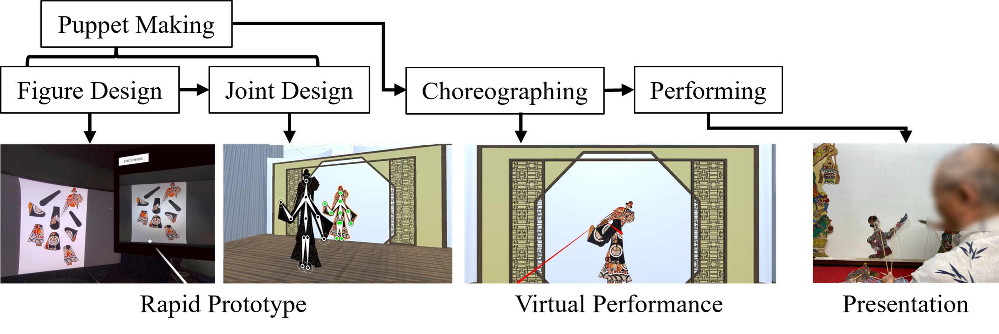
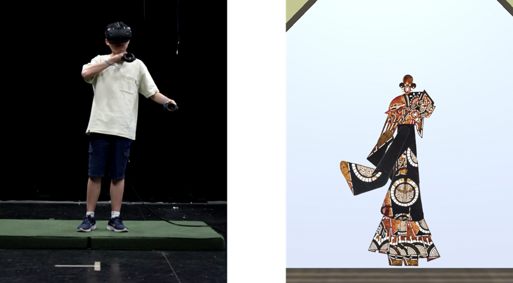

Not Just a Gimmick: A Preliminary Study on Designing Interactive Media Art to Empower Embedded Culture's Practitioner
通过设计交互媒体艺术赋能传统文化实践者
First release at Siggraph Asia 2024

Abstract
摘要
Interactive Media Art (IMA) offers a promising avenue for preserving and promoting cultural heritage by engaging audiences through immersive experiences. However, its potential to support the creation of cultural content and empower practitioners has been largely underutilized. Taking shadow puppetry, a traditional art form often featured in IMA, as a cut point to examine how current IMA practices can be reimagined to better serve the needs of cultural custodians, this paper adopting a practitioner-centered design approach, aim to develop IMA content that not only showcases traditional art but also supports its sustainable innovation and development. While our research is still in its early stages, short-term experiments suggest that IMA can serve as an effective tool for creative support, assisting artists in producing their work. The long-term impact of these systems on artistic output remains to be explored.
交互媒体艺术（IMA）通过沉浸式体验吸引观众，为保存和推广文化遗产提供了一条有前景的途径。然而，其支持文化内容创作和赋能从业者的潜力在很大程度上尚未被充分利用。以皮影戏这一经常在交互媒体艺术中出现的传统艺术形式为切入点，本文探讨了如何重新构想当前的交互媒体艺术实践，以更好地满足文化守护者的需求。通过采用以从业者为中心的设计方法，我们旨在开发不仅展示传统艺术，还支持其可持续创新和发展的交互媒体艺术内容。虽然我们的研究仍处于早期阶段，但短期实验表明，交互媒体艺术可以作为创意支持的有效工具，协助艺术家创作作品。这些系统对艺术创作的长期影响仍有待探索。
Introduction
引言
Interactive Media Art (IMA) has emerged as a powerful tool in cultural heritage preservation, celebrated for its ability to recreate structures and visual styles while engaging audiences with heritage through interactive methods. By allowing users to experience cultural artifacts firsthand, IMA demonstrates how traditional art forms can embrace modern technology.
交互媒体艺术（IMA）已成为文化遗产保护的强大工具，因其能够重现结构和视觉风格，同时通过互动方式让观众参与到文化遗产中而备受赞誉。通过让用户亲身体验文化艺术品，交互媒体艺术展示了传统艺术形式如何拥抱现代技术。
However, while the use of IMA to promote cultural content is promising, its potential to contribute to the creation of such content and support practitioners remains largely untapped. Many IMAs, though visually appealing, often fail to make a meaningful impact on the preservation and evolution of traditional art, becoming mere "art on the wall." Our research highlights this gap, stressing the need for IMA to evolve beyond a "fancy display" and become a tool that genuinely supports the cultural communities it draws from, fostering sustainable innovation and development in traditional art forms. The true significance of IMA lies not just in how it presents traditional art through new media, but in its potential to contribute to the long-term growth and sustainability of these cultural practices.
然而，尽管使用交互媒体艺术推广文化内容前景广阔，但其在创造此类内容和支持从业者方面的潜力仍然基本未被开发。许多交互媒体艺术作品虽然视觉上吸引人，但往往无法对传统艺术的保存和发展产生有意义的影响，沦为"墙上的艺术"。我们的研究强调了这一差距，强调交互媒体艺术需要超越"华丽展示"，成为真正支持其所借鉴的文化社区的工具，促进传统艺术形式的可持续创新和发展。交互媒体艺术的真正意义不仅在于它如何通过新媒体呈现传统艺术，还在于它对这些文化实践的长期发展和可持续性的潜在贡献。
In this paper, we focus on shadow puppetry, a common cultural theme in IMA design, and assess the current state of IMA design through the lens of the practitioner community. By adopting a new design approach, we aim to create IMA content that supports both the creation of traditional art and technological development. Our preliminary research demonstrates the potential and feasibility of these IMA applications, with future work exploring the long-term impact of IMA on practitioners' creative processes.
在本文中，我们聚焦皮影戏这一交互媒体艺术设计中常见的文化主题，并通过从业者社区的视角评估交互媒体艺术设计的当前状态。通过采用新的设计方法，我们旨在创造既支持传统艺术创作又促进技术发展的交互媒体艺术内容。我们的初步研究展示了这些交互媒体艺术应用的潜力和可行性，未来的工作将探索交互媒体艺术对从业者创作过程的长期影响。
ShadowTroupe Workshop: Towards a More Sustainable IMA Solution for Practitioners
ShadowTroupe工作坊：为从业者提供更可持续的交互媒体艺术解决方案
We began by exploring shadow puppetry, a theme often integrated into IMA, and examined the creative experiences of shadow puppet artists. We interviewed three distinct groups of artists, totaling 14 individuals, all of whom had previously collaborated with new media art design teams. Without delving into specific design details, we focused on the roles these artists played, their level of involvement, and their experiences in these new media projects. From a sustainability perspective, we explored the impact of new media art on their practices and sought their views on its influence and application to traditional art forms.
我们首先探索了皮影戏这一经常被整合到交互媒体艺术中的主题，并研究了皮影戏艺术家的创作体验。我们采访了三个不同的艺术家群体，共14人，他们都曾与新媒体艺术设计团队合作过。在不深入具体设计细节的情况下，我们关注这些艺术家所扮演的角色、参与程度以及他们在这些新媒体项目中的体验。从可持续性的角度，我们探讨了新媒体艺术对他们实践的影响，并寻求他们对其对传统艺术形式的影响和应用的看法。
The results indicate that the influence between IMA and traditional art is minimal. IMA outputs are frequently disconnected from their cultural roots, a misalignment often attributed to differing priorities between practitioners and designers. Designers typically prioritize how traditional art is received by a broader audience, which often leads to the sacrifice of traditional art's core essence during adaptation to new media formats, such as in the design of interaction methods, to cater to wider user preferences. Consequently, traditional art's visual concepts are conveyed, but its core essence is significantly compromised. For traditional artist communities, many IMA projects aim to address the lack of attention toward traditional art. However, this is only one aspect of the decline of cultural heritage art. The disappearance of the practitioner communities and the long-term stagnation of techniques, which are the root sustainability issues threatening traditional art forms, are rarely addressed by researchers. Moreover, projects that barely touch the surface of influencing the original theme quickly decay due to shifting designer interests and a lack of long-term support, leaving behind an "untouchable new media mess" for practitioners to manage.
结果表明，交互媒体艺术与传统艺术之间的影响是有限的。交互媒体艺术的输出经常与其文化根源脱节，这种不匹配通常归因于从业者和设计师之间优先事项的不同。设计师通常优先考虑传统艺术如何被更广泛的受众接受，这往往导致在适应新媒体格式过程中牺牲传统艺术的核心本质，例如在交互方法的设计中，以迎合更广泛的用户偏好。因此，传统艺术的视觉概念得以传达，但其核心本质却大大受损。对于传统艺术家社区而言，许多交互媒体艺术项目旨在解决对传统艺术关注不足的问题。然而，这只是文化遗产艺术衰退的一个方面。从业者社区的消失和技术的长期停滞，这些威胁传统艺术形式的根本可持续性问题，很少被研究人员关注。此外，那些几乎不触及影响原始主题表面的项目，由于设计师兴趣的转变和缺乏长期支持，很快就会衰退，留下一个"不可触碰的新媒体混乱"让从业者去管理。
Based on the design challenges identified from our interviews, we re-evaluated the creative practices and design approaches of IMA within the context of traditional art. Our goal was to develop an IMA that better aligns with the needs of the artist community. We shifted the typical IMA design approach by considering the perspective of the practitioners, conducting field studies on the creative processes of shadow puppet artists, and establishing a foundational workflow for design practice based on these insights. In collaboration with the artists, we explored various parts of this workflow, presenting IMA interpretations and brainstorming potential enhancements to improve workflow efficiency.
基于我们对访谈中识别的设计挑战的重新评估，我们重新评估了IMA在传统艺术背景下的创意实践和设计方法。我们的目标是开发一个更符合从业者需求的IMA。我们通过考虑从业者的视角，对皮影戏艺术家的创作过程进行实地研究，并基于这些见解建立了一个设计实践的基础工作流程。与艺术家合作，我们探索了这一工作流程的各个部分，提出了IMA的解释和改进工作流程效率的潜在方法。
We aimed to use the complete shadow puppet design process as the foundation for the IMA experience, to showcase how the art form is created from ideas to finalization, offering comprehensive experience of the entire workflow. Currently, we have developed several small systems using Unity and employed on Quest 3, specifically for rapid prototyping (puppet making) and dance choreography. (See Figure 1) We experimented with virtual reality headsets as image capture tools, allowing sketches to be quickly processed and transformed into controllable shadow puppet models. These models were integrated into a realistic, full-body-control, embodied interaction system, designed according to the unique control dynamics of shadow puppetry. (See Figure 2) Artists use this system to simulate dance choreography, test and practice within a pre-set virtual stage environment, and apply the results in design iteration and reflection. To ensure that cultural content was accurately conveyed, we maintained close communication with the artist community throughout the process.
我们旨在将完整的皮影戏设计过程作为IMA体验的基础，展示从创意到最终实现的全过程，提供整个工作流程的全面体验。目前，我们使用Unity开发了几个小型系统，并部署在Quest 3上，专门用于快速原型设计（木偶制作）和舞蹈编排。（见图1）我们尝试使用虚拟现实头戴式显示器作为图像捕获工具，允许草图快速处理并转换为可控的皮影木偶模型。这些模型被集成到一个逼真的全身控制、具身交互系统中，根据皮影戏的独特控制动态设计。（见图2）艺术家使用这个系统模拟舞蹈编排，在预设的虚拟舞台上测试和练习，并在设计迭代和反思中应用结果。为了确保文化内容的准确传达，在整个过程中我们与艺术家社区保持密切沟通。
We further empowered the artists by returning the ability to adjust control details, allowing them to tailor the system to their operational habits and closely replicate their real-world creative experiences.
我们进一步赋予艺术家调整控制细节的能力，允许他们根据其操作习惯定制系统，并紧密复制他们在现实世界中的创作体验。
In our initial small-scale usability testing with artists (n=6, 5 male, 1 female), the system performed well in both efficiency and cultural fidelity, with practitioners easily adapting and integrating ShadowTroupe into their existing workflows. Feedback indicated that practitioners recognized this new media as a valuable support tool for their practice. They praised the effort and results in recreating the intricate techniques of the original performances through IMA design but noted that further refinement is needed in some details. However, we see evaluating the impact of the system on the production of traditional art content as the long-term goal. By the time this paper is written, we have been collaborating with the practitioner community for four months, continuously refining the system through practical application.
在初步的小规模用户测试中，系统在效率和文化忠实度方面表现出色，从业者很容易适应并整合ShadowTroupe进入他们的现有工作流程。反馈表明，从业者认为这种新媒体是一种有价值的创意支持工具。他们称赞了通过IMA设计重现原创表演的复杂技术，但指出在一些细节上需要进一步改进。然而，我们认为评估系统对传统艺术内容生产的影响是长期目标。到本文撰写时，我们与从业者社区合作了四个月，通过实际应用不断完善系统。

Figure 1: ShadowTroupe’s Integration into Basic Shadow Puppet Design Workflow Demonstration.
图1：ShadowTroupe融入基本皮影戏设计工作流程演示。

Figure 2: ShadowTroupe’s Interaction Demonstration. Artist Utilize This System to Simulate Puppet Control Performance. SeeDemo BookletandInteraction Developmentfor more infomation.
图2：ShadowTroupe的交互演示。艺术家使用该系统模拟皮影木偶控制表演。详细见图示与交互开发
Conclusion
总结
This paper presents our initial reflections on the integration of new media art within traditional art, explores how IMA design can be incorporated into traditional art design workflows. Future research aims to reveal the long-term impact of new IMA designs on traditional art creation and technological innovation. We hope this shift in design thinking will engage the HCI research and IMA design communities, drawing attention to the needs of practitioners and encouraging sustainable support for cultural Practitioners.
本文介绍了我们对将新媒体艺术融入传统艺术的初步反思，探讨了如何将IMA设计融入传统艺术设计工作流程。未来的研究旨在揭示新IMA设计对传统艺术创作和技术的长期影响。我们希望这种设计思维的转变将吸引HCI研究和IMA设计社区的关注，引起对从业者需求的重视，并鼓励对文化从业者进行可持续的支持。
Ref.
- Champion, E. 2016. Critical gaming: Interactive history and virtual heritage. Routledge.
- Giaccardi, E. 2012. Heritage and social media: Understanding heritage in a participatory culture. Routledge.
- Jones, S., and T. Yarrow. 2013. Crafting authenticity: An ethnography of conservation practice. Journal of Material Culture 18, 1, 3-26. DOI: https://doi.org/10.1177/1359183512474383.
- Tost, L. P., and E. M. Champion. 2007, October. A critical examination of presence applied to cultural heritage. In The 10th annual international workshop on presence, 245-256.
- Warr, A., and E. O'Neill. 2005. Understanding design as a social creative process. In Proceedings of the 5th Conference on Creativity & Cognition, 118-127.
- Foni, A. E., G. Papagiannakis, and N. Magnenat-Thalmann. 2010. A taxonomy of visualization strategies for cultural heritage applications. Journal on Computing and Cultural Heritage (JOCCH) 3, 1, 1-21. DOI: https://doi.org/10.1145/1805961.1805965.